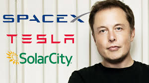

Elon Musk

Contributions of Elon Musk
Musk co-founded Zip2, a provider of Internet software to the media industry. In 2007, Musk was recognized for his work by Research and Development Magazine's, receiving their Innovator of the Year Award.
Elon Musk founded SpaceX, a company that makes rockets and spacecraft. He became the chief executive officer and a major funder of Tesla, which makes electric cars.
Elon Musk's Life Story

Musk is a native of South Africa, born in 1971 to parents who later divorced. His father was an engineer and his mother—originally from Canada—was a nutritionist. Musk was fascinated by science fiction and computers in his adolescent years. When he was twelve, he wrote the code for his own video game and actually sold it to a company. In his late teens, he immigrated to Canada in order to avoid the required military service for white males in South Africa. It was still the era of apartheid, the South African legal system that denied political and economic rights to the country's majority-black native population. Musk was uninterested in serving in the army, which was engaged at the time in a battle to stamp out a black nationalist movement. Thanks to his mother's Canadian ties, he was able to enroll at Queen's University in Kingston, one of Ontario's top schools.
Musk had planned on a career in business, and he worked at a Canadian bank one summer as a college intern. This was his only real job before he became an Internet entrepreneur. Midway through his undergraduate education, he transferred to the University of Pennsylvania, where he earned a bachelor's degree in economics and a second bachelor's in physics a year later. From there, he won admission to the prestigious doctoral program at Stanford University in California, where he planned to concentrate on a Ph.D. in energy physics. He moved to California just as the Internet boom was starting in 1995, and he decided he wanted to be in on it, too. He dropped out of Stanford after just two days in order to start his first company, Zip2 Corporation. This was an online city guide aimed at the newspaper publishing business, and Musk was able to land contracts with both the New York Times and the Chicago Tribune to provide content for their new online sites.
Musk was just twenty-four when he started the company, and he devoted all of his energies to see it succeed. At one point,
"Failure is an option here. If things are not failing, you are not innovating enough."
he lived in the same rented office that served as his company's headquarters, sleeping on a futon couch and showering at the local YMCA, which "was cheaper than renting an apartment," he explained in an interview with Roger Eglin of the Sunday Times of London. Still, the company struggled to fulfill its contracts and meet the payroll and other costs, and he looked for outside financing. Eventually a group of venture capitalists, investors who provide start-up money to new businesses, financed Zip2 with $3.6 million, but he gave up majority control of the company in exchange.
Elon Musk Quotes